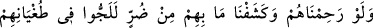
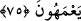

şefâati nerede kaldı?” dedi. Behlül: “O gün, Rahman’ın izin verdiği ve sözünden
hoşlandığının dışındakilere şefâat fayda vermez.” (Tâhâ, 20/109) diye cevap verdi.
Hârun: “Bir ihtiyacın var mı?” dedi. Behlül: “Evet, günahlarımı bağışlaman ve beni
cennete koyman.” dedi. Hârun: “Bu benim elimde değil. Fakat borcun olduğu kulağıma
geldi. Senin adına onu ödeyelim.” dedi. Behlül: “Borç borçla ödenmez. İnsanların
mallarını kendilerine ver.” dedi. Hârun: “Sana ölene kadar ödenecek bir maaş
bağlanmasını emredelim mi?” dedi. Behlül: “İkimiz de Allah Teâlâ’nın kuluyuz. Seni
hatırlayıp beni unutacağını mı sanıyorsun?” dedi. Hârun Reşid, Behlül’ün nasîhatini
kabul edip yoluna devam etti.
Behlül, son sözü ile “Rabbinin karşılığı/ihsânı daha hayırlıdır.” (el-Mü’minûn,
23/72) âyetinin muhtevâsına işâret etmiştir. Çünkü, umulmadık yerden gelen bir şey,
belli bir cihetten gelenden daha hayırlıdır.
Hâfız der ki:
Altın hazînesi yoksa, kanâat hazînesi bâkîdir
Padişahlara onu vermiş olan, fakirlere de bunu vermiştir
Şeyh Sa‘dî (k.s.) da şöyle der:
Bal, iğnenin yarasına değmez, cancağızım
İnsanın kendi pekmeziyle kanâat etmesi yeğdir
İster padişah olsun ister eskici
Uyuduklarında ikisine de geceler gündüzdür
75. Eğer onlara acıyıp da içinde bulundukları sıkıntıyı giderseydik, iyice
körleşerek azgınlıklarında direnirlerdi.
Rivayet edilir ki: Sümâme b. Üsal Hanefî müslüman oldu ve Yemâme’ye vardı.
Mekkeliler’in eline yiyecek ulaşmasına mâni oldu. Allah da Mekkeliler’i kıtlığa mâruz
bıraktı. Hattâ deve tüyünü kanla yoğurup onu yemeye başladılar. Kâşifî der ki:
“Mekkeliler, ölmüş ve murdar şeyleri yemeye mübtelâ oldular.” Bunun üzerine Ebû
Süfyân, Hz. Peygamber (s.a.)’e gelerek: “Senden Allah ve akrabalık hakkı için
soruyorum. Sen âlemlere rahmet için gönderildiğini iddiâ etmiyor muydun?” dedi.
Peygamberimiz de: “Evet” buyurdu. Bunun üzerine Ebû Süfyan: “Babaları kılıçla,
çocukları açlıkla öldürdün. Bu kıtlığın bizden kaldırılması için dua et.” dedi.
Peygamberimiz de duâ etti ve Allah onlardan kıtlığı kaldırdı. Bunun üzerine Allah bu